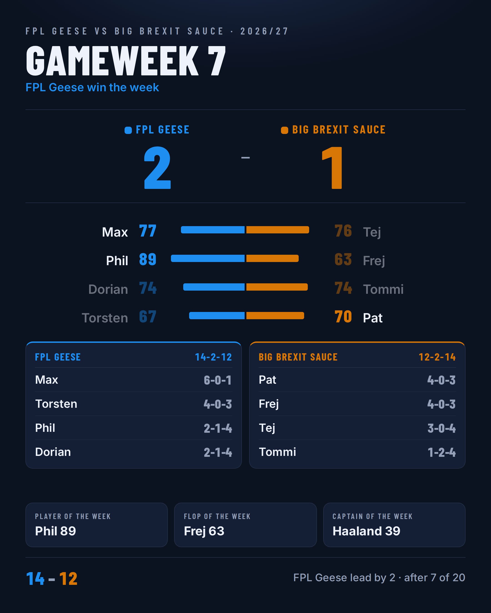
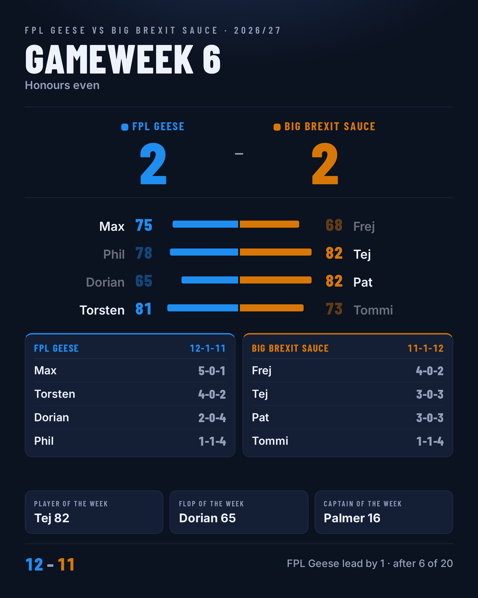

Season: FPL Geese 14–12 Big Brexit Sauce
RESULTS
Max 77–76 Tej
Phil 89–63 Frej
Dorian 74–74 Tommi
Torsten 67–70 Pat
AWARDS
Player of the week: Phil (89)
Flop of the week: Frej (63)
Captain of the week: Haaland 39 (Phil)
Luckiest win: Max by 1
Biggest win: Phil by 26
Unluckiest loss: Tej scored 76 and still lost
Bench waste: Max left 9 on the bench
Chip: Phil played Triple Captain
RECORDS
FPL Geese (14–2–12)
1. Max 6–0–1
2. Torsten 4–0–3
3. Phil 2–1–4
4. Dorian 2–1–4
Big Brexit Sauce (12–2–14)
1. Pat 4–0–3
2. Frej 4–0–3
3. Tej 3–0–4
4. Tommi 1–2–4
STREAKS
Max has won 6 in a row
13 gameweeks left, 52 points still available. Gap: 2.

Season: FPL Geese 12–11 Big Brexit Sauce
RESULTS
Max 75–68 Frej
Phil 78–82 Tej
Dorian 65–82 Pat
Torsten 81–73 Tommi
AWARDS
Player of the week: Tej (82)
Flop of the week: Dorian (65)
Captain of the week: Palmer 16 (Phil)
Captain blank: Frej got 4 from Saka
Captain blank: Max got 2 from B.Fernandes
Biggest win: Pat by 17
Unluckiest loss: Phil scored 78 and still lost
Bench waste: Torsten left 20 on the bench
Chip: Frej played Wildcard
Chip: Tommi played Wildcard
RECORDS
FPL Geese (12–1–11)
1. Max 5–0–1
2. Torsten 4–0–2
3. Dorian 2–0–4
4. Phil 1–1–4
Big Brexit Sauce (11–1–12)
1. Frej 4–0–2
2. Tej 3–0–3
3. Pat 3–0–3
4. Tommi 1–1–4
STREAKS
Tommi has lost 4 in a row
Dorian has lost 3 in a row
Max has won 5 in a row
14 gameweeks left, 56 points still available. Gap: 1.
Season: FPL Geese 10–9 Big Brexit Sauce
FPL Geese take the lead!
RESULTS
Max 53–38 Pat
Phil 43–35 Tommi
Dorian 50–64 Frej
Torsten 48–38 Tej
AWARDS
Player of the week: Frej (64)
Flop of the week: Tommi (35)
Captain of the week: Haaland 12 (Max)
Biggest win: Max by 15
Unluckiest loss: Dorian scored 50 and still lost
Bench waste: Pat left 20 on the bench
Chip: Torsten played Wildcard
RECORDS
FPL Geese (10–1–9)
1. Max 4–0–1
2. Torsten 3–0–2
3. Dorian 2–0–3
4. Phil 1–1–3
Big Brexit Sauce (9–1–10)
1. Frej 4–0–1
2. Tej 2–0–3
3. Pat 2–0–3
4. Tommi 1–1–3
STREAKS
Tommi has lost 3 in a row
Max has won 4 in a row
Frej has won 3 in a row
15 gameweeks left, 60 points still available. Gap: 1.
Season: FPL Geese 7–8 Big Brexit Sauce
Big Brexit Sauce take the lead!
RESULTS
Max 81–80 Tommi
Phil 82–103 Pat
Dorian 97–103 Tej
Torsten 68–84 Frej
AWARDS
Player of the week: Pat (103)
Flop of the week: Torsten (68)
Captain of the week: João Pedro 24 (Frej)
Luckiest win: Max by 1
Biggest win: Pat by 21
Unluckiest loss: Dorian scored 97 and still lost
Bench waste: Max left 20 on the bench
Chip: Max played Free Hit
Chip: Phil played Wildcard
Chip: Pat played Triple Captain
Chip: Tej played Triple Captain
RECORDS
FPL Geese (7–1–8)
1. Max 3–0–1
2. Dorian 2–0–2
3. Torsten 2–0–2
4. Phil 0–1–3
Big Brexit Sauce (8–1–7)
1. Frej 3–0–1
2. Tej 2–0–2
3. Pat 2–0–2
4. Tommi 1–1–2
STREAKS
Phil has lost 3 in a row
Max has won 3 in a row
16 gameweeks left, 64 points still available. Gap: 1.
Season: FPL Geese 6–5 Big Brexit Sauce
FPL Geese take the lead!
RESULTS
Max 56–44 Tej
Phil 55–61 Frej
Dorian 58–52 Tommi
Torsten 57–46 Pat
AWARDS
Player of the week: Frej (61)
Flop of the week: Tej (44)
Captain of the week: Haaland 27 (Max)
Biggest win: Max by 12
Unluckiest loss: Phil scored 55 and still lost
Bench waste: Phil left 25 on the bench
Chip: Max played Triple Captain
Chip: Tej played Wildcard
Chip: Frej played Triple Captain
Chip: Dorian played Triple Captain
Chip: Tommi played Triple Captain
Chip: Torsten played Free Hit
Chip: Pat played Wildcard
RECORDS
FPL Geese (6–1–5)
1. Torsten 2–0–1
2. Dorian 2–0–1
3. Max 2–0–1
4. Phil 0–1–2
Big Brexit Sauce (5–1–6)
1. Frej 2–0–1
2. Tommi 1–1–1
3. Tej 1–0–2
4. Pat 1–0–2
17 gameweeks left, 68 points still available. Gap: 1.
Season: FPL Geese 3–4 Big Brexit Sauce
RESULTS
Max 107–101 Frej
Phil 104–135 Tej
Dorian 114–107 Pat
Torsten 107–127 Tommi
AWARDS
Player of the week: Tej (135)
Flop of the week: Frej (101)
Captain of the week: B.Fernandes 46 (Max)
Biggest win: Tej by 31
Unluckiest loss: Pat scored 107 and still lost
Bench waste: Max left 25 on the bench
Chip: Tej played Bench Boost
RECORDS
FPL Geese (3–1–4)
1. Torsten 1–0–1
2. Dorian 1–0–1
3. Max 1–0–1
4. Phil 0–1–1
Big Brexit Sauce (4–1–3)
1. Tommi 1–1–0
2. Tej 1–0–1
3. Pat 1–0–1
4. Frej 1–0–1
18 gameweeks left, 72 points still available. Gap: 1.
Season: FPL Geese 1–2 Big Brexit Sauce
Big Brexit Sauce take the lead!
RESULTS
Max 53–79 Pat
Phil 69–69 Tommi
Dorian 47–56 Frej
Torsten 70–59 Tej
AWARDS
Player of the week: Pat (79)
Flop of the week: Dorian (47)
Captain of the week: B.Fernandes 4 (Max)
Captain blank: Max got 4 from B.Fernandes
Captain blank: Pat got 4 from B.Fernandes
Captain blank: Phil got 4 from B.Fernandes
Captain blank: Tommi got 4 from Haaland
Captain blank: Dorian got 4 from Haaland
Captain blank: Frej got 4 from B.Fernandes
Captain blank: Torsten got 4 from B.Fernandes
Captain blank: Tej got 4 from B.Fernandes
Biggest win: Pat by 26
Unluckiest loss: Tej scored 59 and still lost
Bench waste: Tej left 7 on the bench
Chip: Max played Bench Boost
Chip: Pat played Bench Boost
Chip: Phil played Bench Boost
Chip: Tommi played Bench Boost
Chip: Frej played Bench Boost
Chip: Torsten played Bench Boost
RECORDS
FPL Geese (1–1–2)
1. Torsten 1–0–0
2. Phil 0–1–0
3. Max 0–0–1
4. Dorian 0–0–1
Big Brexit Sauce (2–1–1)
1. Pat 1–0–0
2. Frej 1–0–0
3. Tommi 0–1–0
4. Tej 0–0–1
19 gameweeks left, 76 points still available. Gap: 1.